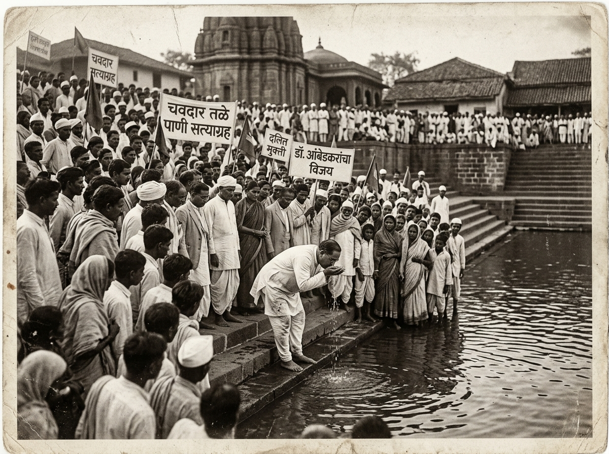
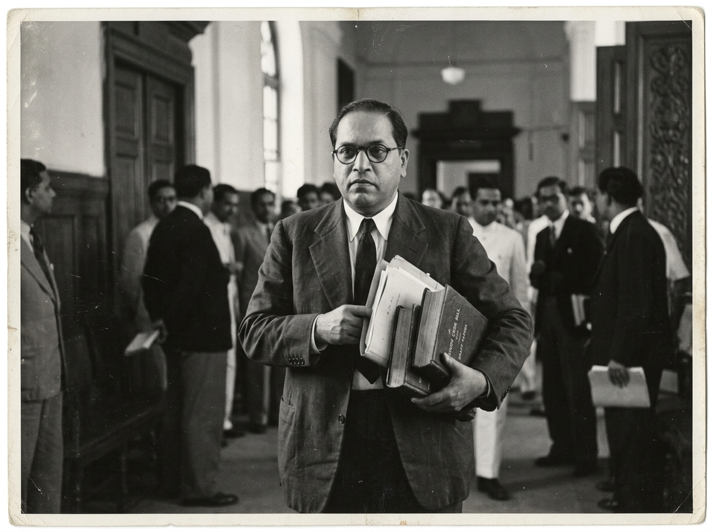

DR. BABASAHEB AMBEDKAR
"The Architect of Modern India: Constitutionalism, Emancipation & Philosophy"

The Intellectual Crucible: Columbia & LSE
Rigorous Empirical Economics & Social Anthropology
Ambedkar arrived at Columbia University in New York in 1913 on a scholarship from Sayajirao Gaekwad III of Baroda. Mentored by philosopher John Dewey and economist Edwin Seligman, he pioneered sociological analysis of caste and empirical monetary economics.
Intellectual Milestones
-
🎓M.A. & Ph.D., Columbia University (1915–1927): Dissertation on 'The Evolution of Provincial Finance in British India'.
-
🏛️D.Sc. in Economics, London School of Economics (1923): Treatise on 'The Problem of the Rupee: Its Origin and Solution'.
-
⚖️Barrister-at-Law, Gray's Inn, London (1923): Admitted to the English Bar to wage legal battles for social justice.
-
🏦Foundation of the RBI: Hilton Young Commission (Royal Commission on Indian Currency) relied extensively on Ambedkar's testimony and treatise.
The Mahad Water Satyagraha
Water as a Fundamental Human Right & Social Empowerment
At the municipal tank of Chavdar Tale in Mahad, Maharashtra, thousands of Untouchables gathered under Ambedkar's leadership. Even though local animals had access to the pond, Dalits were forbidden from touching its waters. Ambedkar drank from the tank, initiating the first civil rights water movement in modern history.

Historic Signposts
-
💧Universal Water Access: Transformed water from an instrument of purity-pollution into an inviolable public commons.
-
🔥Manusmriti Dahan (Dec 25, 1927): Public burning of the ancient legal code that codified graded inequality and subjection.
-
✊Women's Mobilization: Over 3,000 women participated, following Ambedkar's call to cast off badges of servitude.
-
📅National Legacy: March 20 is officially commemorated nationwide as 'Social Empowerment Day' (Samajik Sadbhavna Diwas).
Round Table Conferences & The Poona Pact
Representation, Franchise & The Constitutional Bargain
At the London Round Table Conferences (1930–1932), Ambedkar eloquently advocated for the constitutional safeguards of India's 60 million Depressed Classes, refusing to accept independence without guaranteed equality and political representation.
Poona Pact Outcomes
-
🤝Yerwada Jail Negotiations (Sept 1932): Signed between Dr. Ambedkar, Madan Mohan Malaviya, and M.C. Rajah to end Gandhi's fast.
-
📈Doubling of Reserved Seats: Increased reserved provincial legislative seats from 71 to 148 across all British Indian provinces.
-
🏛️Central Assembly Quota: 18% of general seats in the Central Legislature reserved for Depressed Classes.
-
⚖️Birth of Affirmative Action: Laid the constitutional bedrock for Articles 15, 16, 330, and 332 in independent India.
Annihilation of Caste
The Seminal Philosophical Masterpiece on Liberty, Equality & Fraternity
Prepared as an address for the Jat-Pat-Todak Mandal of Lahore, this text dismantled the economic, sociological, and moral defenses of caste. Ambedkar demonstrated that caste is not merely a division of labour, but a division of labourers based on hereditary hierarchy.
Core Philosophical Pillars
-
🕊️Fraternity as Social Endosmosis: Democracy is not merely a form of government, but primarily a mode of associated living and communicated experience.
-
📚Critique of Shastras: True reform requires destroying the sanctity of texts that sanctify graded inequality.
-
⚖️Individual as the Unit: Society must treat the individual human being, not the caste group, as the foundational moral unit.
-
🌍Global Resonance: Translated into dozens of languages, studied across global philosophy and sociology departments.
Chief Architect of the Constitution
2 Years, 11 Months, 18 Days of Democratic Craftsmanship
Appointed Chairman of the Drafting Committee on August 29, 1947, Ambedkar synthesized republican liberty with socioeconomic justice. He steered 7,635 tabled amendments, passionately defending universal adult franchise, fundamental rights, and an independent judiciary.
Constitutional Landmarks
-
📜Preamble: Inscribed Sovereign, Democratic, Justice (Social, Economic, Political), Liberty, Equality, and Fraternity.
-
💖Article 32 • 'The Heart and Soul': Direct writ access to the Supreme Court to enforce fundamental rights.
-
🚫Article 17 • Abolition of Untouchability: Banned untouchability in any form — a punishable penal offense.
The Hindu Code Bill & Women's Emancipation
Codifying Gender Equality in Property, Marriage & Succession
Serving as India's First Law Minister, Ambedkar championed the Hindu Code Bill to dismantle patriarchal personal laws. The bill sought to grant women equal shares in ancestral property, absolute ownership rights, legal monogamy, and the right to seek divorce.

Reforms & Principles
-
👩⚖️Equal Inheritance: Daughters given equal status with sons in property succession and intestate inheritance.
-
💍Enforced Monogamy: Banned polygamous unions and recognized civil divorce on grounds of cruelty or abandonment.
-
🚪Resignation on Principle (Sept 1951): Resigned from the Union Cabinet when parliamentary factions diluted and delayed the Bill.
-
🏛️Posthumous Vindications: Later enacted in separate statutes: Hindu Marriage Act (1955), Hindu Succession Act (1956).
The Historic Nagpur Dhamma Deeksha
Navayana Buddhism & The 22 Vows of Spiritual Emancipation
At Deekshabhoomi in Nagpur on Vijaya Dashami, Dr. Ambedkar fulfilled his historic 1935 Yeola declaration: "I will not die a Hindu." Alongside half a million men, women, and children, he took refuge in the Triple Gem and administered the 22 Vows of ethical transformation.
The 22 Vows & Navayana
-
☸️Navayana ('New Vehicle'): Reinterpreted Buddhist Dhamma as a rational, social gospel centered on universal human dignity and compassion.
-
🪓Renunciation of Superstition: Vows 1 to 8 solemnly renounced worship of discriminatory deities, shraddhas, and Brahminical rituals.
-
⚖️Commitment to Equality: Vow 11: "I shall believe that all human beings are equal."
-
🌱Noble Eightfold Path: Vow 13 & 14: Daily practice of the Arya Ashtanga Marga and compassion for all living beings.
The Complete Works: 60 Official Volumes
20 English Volumes + 40 Hindi Volumes (Dr. Ambedkar Foundation & MEA)
The Dr. Babasaheb Ambedkar Writings and Speeches (BAWS) collection represents one of the most comprehensive archives of political, social, and economic philosophy in human history, spanning over 25,000 pages of original writings, speeches, memos, and parliamentary debates.
Archival Catalog Scope
-
📖Volumes 1–5: Castes in India, Annihilation of Caste, Maharashtra as a Linguistic Province, Philosophy of Hinduism.
-
💰Volumes 6–10: Problem of the Rupee, Untouchables: Who Were They?, Pakistan or Partition of India, What Congress and Gandhi Have Done.
-
☸️Volumes 11–15: The Buddha and His Dhamma, Ancient Indian Commerce, Constituent Assembly Debates, Hindu Code Bill.
-
🌐Volumes 16–20 & Hindi 1–40: Pali Dictionary, Rare Correspondence, Photographic Archive, and Full Hindi Canonical Translations.
Continue Your Research
"Lost rights are never regained by begging, and yet by an appeal to the conscience of the usurpers, but by relentless struggle."